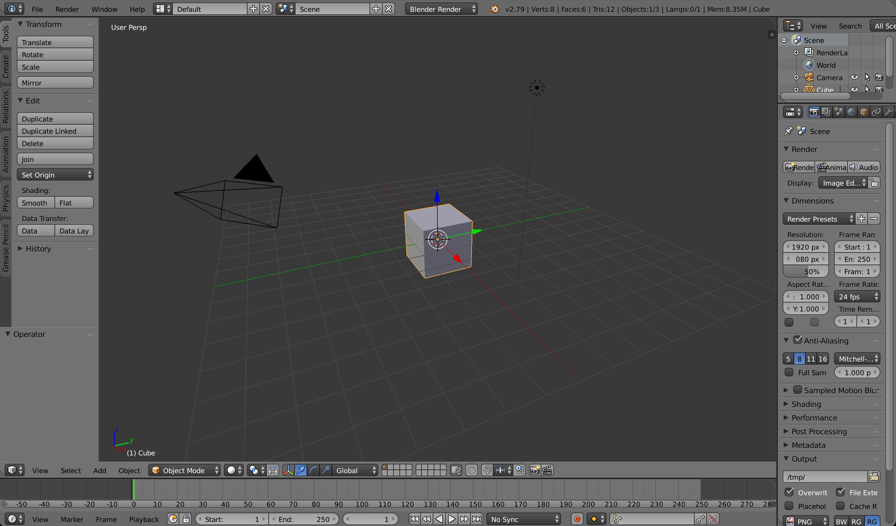

Workshop on Synthetic Data for Polyp Segmentation
 workshop.enricmor.eu
workshop.enricmor.eu
 github.com/enric1994/workshop
github.com/enric1994/workshop
Day 1
- Introduction to synthetic data
- Blender basics
- 3D-based synthetic data
- Polyp segmentation with synthetic data
Synthetic data
Synthetic data

Sindagi, Vishwanath A., Rajeev Yasarla, and Vishal M. Patel. "Jhu-crowd++: Large-scale crowd counting dataset and a benchmark method." IEEE transactions on pattern analysis and machine intelligence. 2020.
Synthetic data

Synthetic data
Synthetic data
Synthetic data
Synthetic data


Synthetic data
- Unlimited
- Perfectly annotated
- Balanced distribution
- Doesn't contain sensitive information
Blender basics
Blender basics
import bpy
# Delete all objects
bpy.ops.object.select_all(action='SELECT')
bpy.ops.object.delete()
# Add a cube
bpy.ops.mesh.primitive_cube_add(location=(0,4,0), rotation=(0, 0, 0.7))
cube = bpy.context.active_object
# Add a material
cube.active_material = bpy.data.materials.new(name="MaterialName")
cube.active_material.diffuse_color = (1, 0, 0, 1)
# Add a camera
bpy.ops.object.camera_add(location=(0, -50, 0), rotation=(3.14 / 2, 0, 0))
bpy.context.scene.camera = bpy.context.active_object
# Add a light
bpy.ops.object.light_add(type='SUN')
# Render image
bpy.context.scene.render.resolution_x = 100
bpy.context.scene.render.resolution_y = 100
bpy.context.scene.render.filepath = '/path/to/render.png'
bpy.ops.render.render(write_still=True)
Task 1: Hello Blender
- Create a dataset of 50 images with 1-10 cubes
- Each image will contain red, green, and blue cubes
- The number of cubes of each color will be random
- The labels will be encoded in the filename:
- id_red_green_blue.png
(0_3_1_6.png)
Task 1: Hello Blender
- Save regularly to prevent losing your work
- Keep the resolution low to speed up the rendering
- Use the random built-in package:
import random
random.randint(0, 10) # Random integer between 0 and 10
random.uniform(-3, 3) # Random float between -3 and 3
random.choice(['red', 'green', 'blue']) # Random choice from the list
3D-based synthetic data
3D environment
3D model
Background image
Lighting and camera
3D-based synthetic data

3D environment
3D-based synthetic data
3D model
3D-based synthetic data
3D-based synthetic data
Background image
3D-based synthetic data

Lighting and camera parameters
3D-based synthetic data
import bpy
# Delete all objects
bpy.ops.object.select_all(action='SELECT')
bpy.ops.object.delete()
# Import the model in FBX format
bpy.ops.import_scene.fbx(filepath="/path/to/model.fbx")
imported_object = bpy.context.selected_objects[0]
imported_object.location = (0, 0, 0)
imported_object.rotation_euler = (0, 0, 0)
imported_object.scale = (4, 4, 4)
# Add a camera
bpy.ops.object.camera_add(location=(0, -50, 0), rotation=(3.14 / 2, 0, 0))
bpy.context.scene.camera = bpy.context.active_object
# Add a light
bpy.ops.object.light_add(type='SUN', location=(0, 0, 0), rotation=(0, 0, 0))
# Background plane
bpy.ops.mesh.primitive_plane_add(size=2, location=(0, 60, 0), rotation=(3.14/2, 0, 0))
plane = bpy.context.active_object
plane.scale = (120, 120, 120)
mat = bpy.data.materials.new("BGMaterial")
mat.use_nodes = True
nodes = mat.node_tree.nodes
links = mat.node_tree.links
for node in nodes:
nodes.remove(node)
tex_node = nodes.new("ShaderNodeTexImage")
emit_node = nodes.new("ShaderNodeEmission")
out_node = nodes.new("ShaderNodeOutputMaterial")
tex_node.image = bpy.data.images.load("/path/to/background.png")
links.new(tex_node.outputs["Color"], emit_node.inputs["Color"])
links.new(emit_node.outputs["Emission"], out_node.inputs["Surface"])
plane.data.materials.append(mat)
# Render image
bpy.context.scene.render.resolution_x = 256
bpy.context.scene.render.resolution_y = 256
bpy.context.scene.render.filepath = "/path/to/render.png"
bpy.ops.render.render(write_still=True)
# Remove orphan data
for block in bpy.data.meshes:
if block.users == 0:
bpy.data.meshes.remove(block)
for block in bpy.data.materials:
if block.users == 0:
bpy.data.materials.remove(block)
for block in bpy.data.images:
if block.users == 0:
bpy.data.images.remove(block)
Task 2: Savanna dataset
- Create a dataset of 30 images
- Each image will contain animals of the same type
- The labels will be encoded in the filename:
- id_animal.png
(0_lion.png)
Use the provided backgrounds and 3D models
Task 2: Savanna dataset
Send your favourite images to workshop@enricmor.eu
Training a classifier with synthetic data
Training a segmentation model
Model
Train data
Test data
Train data: Synth-colon
- 828 images
- 256x256 pixels
- Generated with Blender

Test data: Kvasir-SEG
- 1000 images
- various sizes
- Each image contains 1 polyp
- Collected and annotated by medical professionals

Task 3: Synthetic polyp segmentation
Improve the following components:
- Model
- Loss function
- Optimizer
Recap of Day 1
Introduction to synthetic data
Hello Blender
Savanna dataset
Synthetic polyp segmentation
Recap of Day 1
→
Day 2
- Domain randomization
- Domain adaptation
- Discussion
Domain randomization
Domain randomization
Synthetic
⟶
Real
Domain randomization
Synthetic
Real
Domain randomization

Data augmentation
 Albumentations: https://albumentations.ai/
Albumentations: https://albumentations.ai/
Style transfer
Gatys, Leon A. "A neural algorithm of artistic style." arXiv preprint arXiv:1508.06576 (2015)Style transfer
VGG-16
Simonyan, Karen. "Very deep convolutional networks for large-scale image recognition." arXiv preprint arXiv:1409.1556 (2014).Style transfer
Task 4: Stylize the Savanna dataset
- Try multiple styles
- Find a good balance between style and content
Domain adaptation
Domain adaptation
Synthetic
⟶
Real
Domain adaptation
Domain adaptation

Generative adversarial networks
Generative adversarial networks
Generative adversarial networks
Revi, Remya, K. R. Vidya, and M. Wilscy. "Detection of deepfake images created using generative adversarial networks: A review." Second International Conference on Networks and Advances in Computational Technologies: NetACT 19. Springer International Publishing, 2021.Generative adversarial networks
CycleGAN
CycleGAN
Zhu, Jun-Yan, et al. "Unpaired image-to-image translation using cycle-consistent adversarial networks." Proceedings of the IEEE international conference on computer vision 2017-Octob. 2017.
CycleGAN
Zhu, Jun-Yan, et al. "Unpaired image-to-image translation using cycle-consistent adversarial networks." Proceedings of the IEEE international conference on computer vision 2017-Octob. 2017.
Task 5: Synthetic polyp segmentation with domain adaptation
- Apply data augmentation to the train dataset
- Use the CycleGAN-adapted synthetic images


Wrapping up
Hello Blender
Pytorch introduction
Domain randomization
Data augmentation
Style transfer
Domain adaptation
Generative networks

CycleGAN